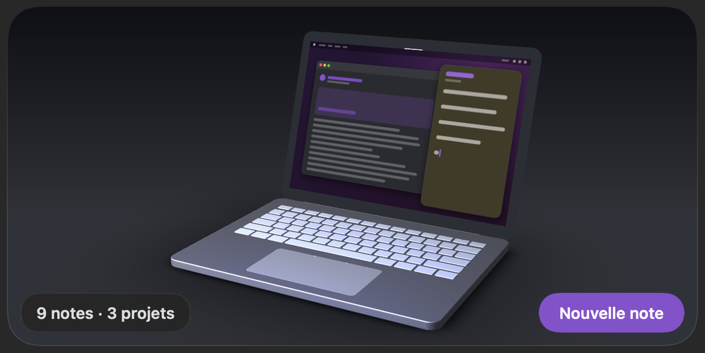
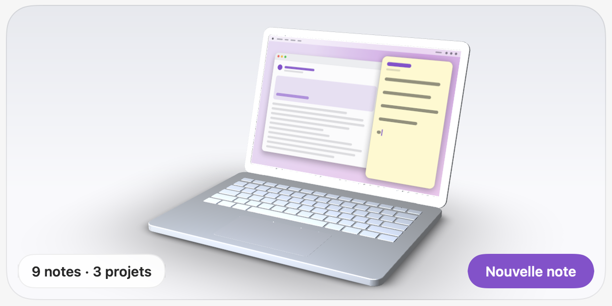
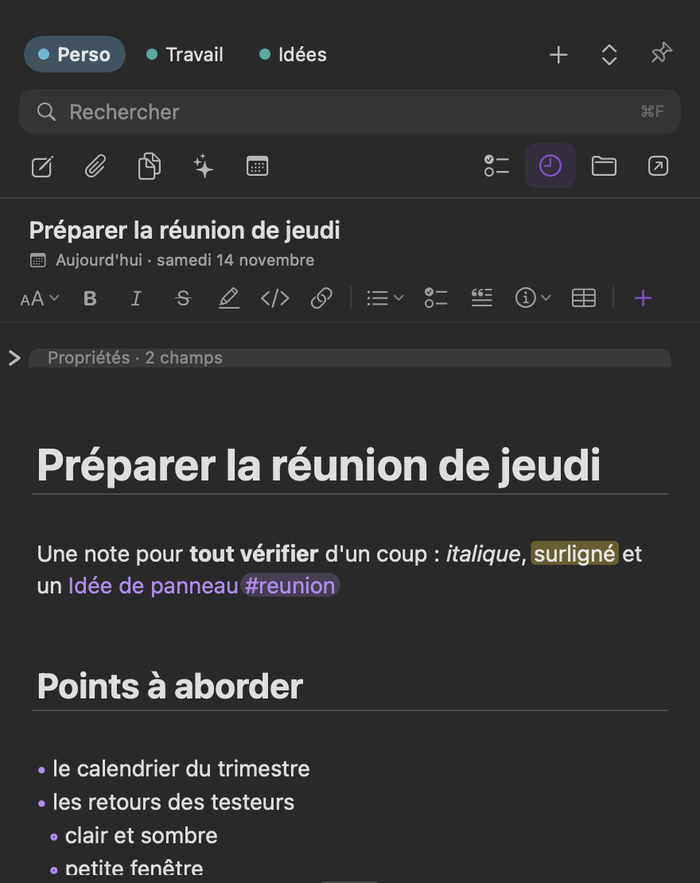
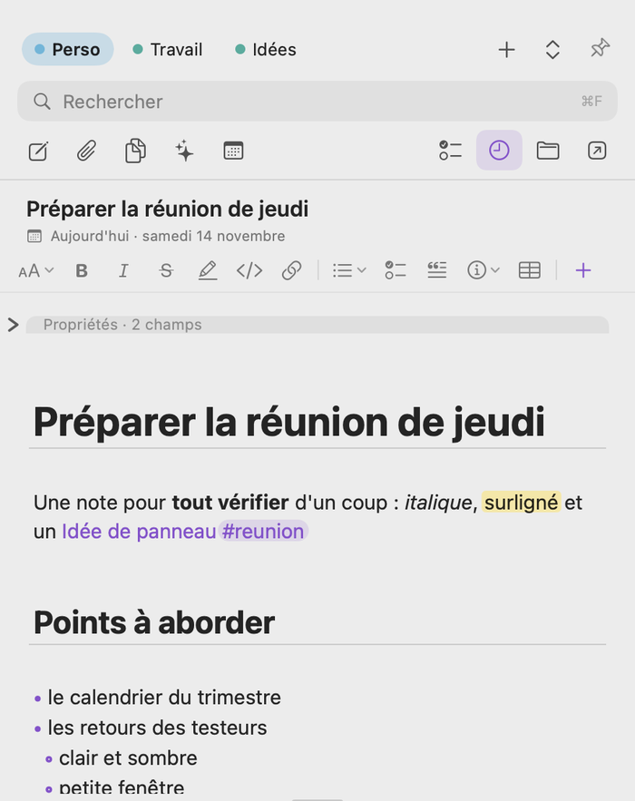
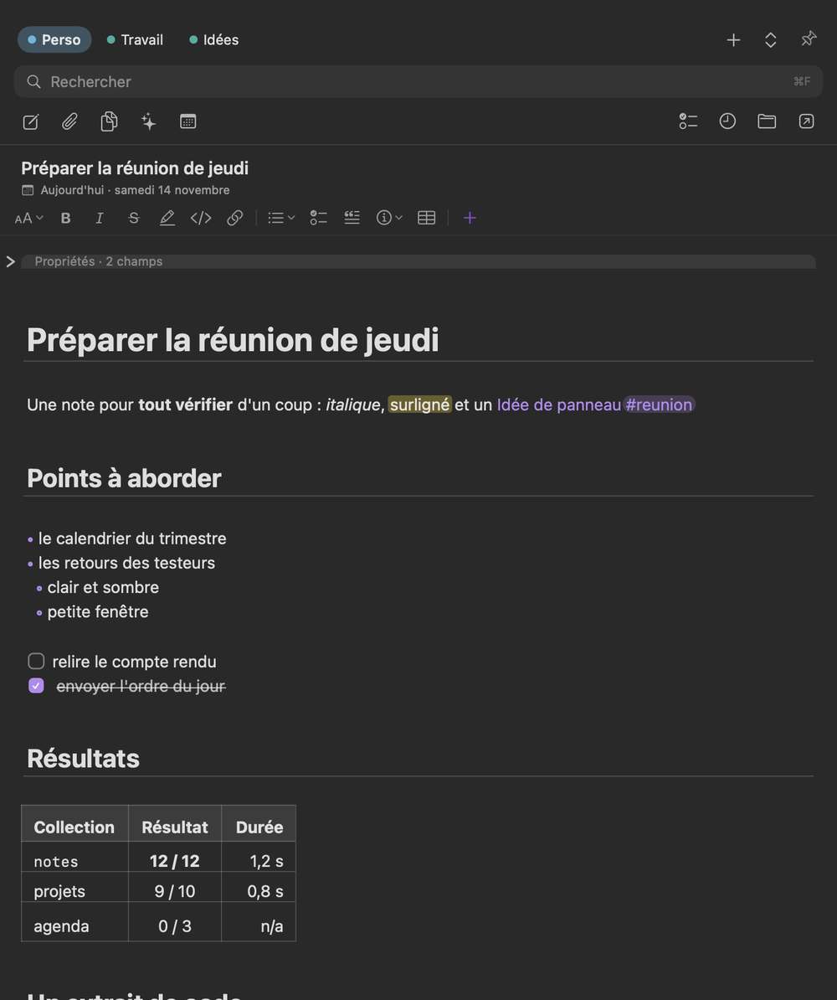
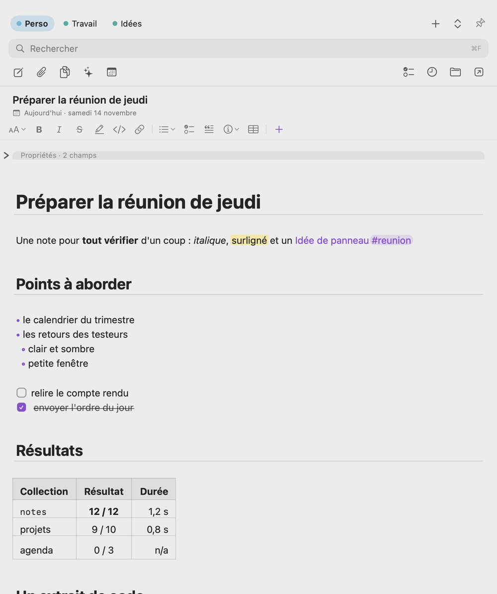
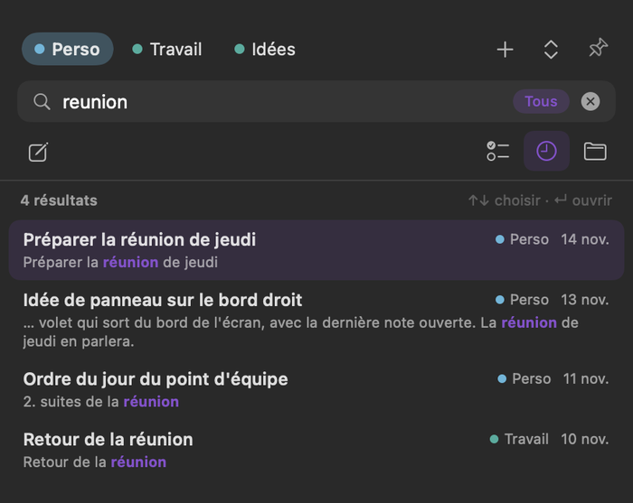
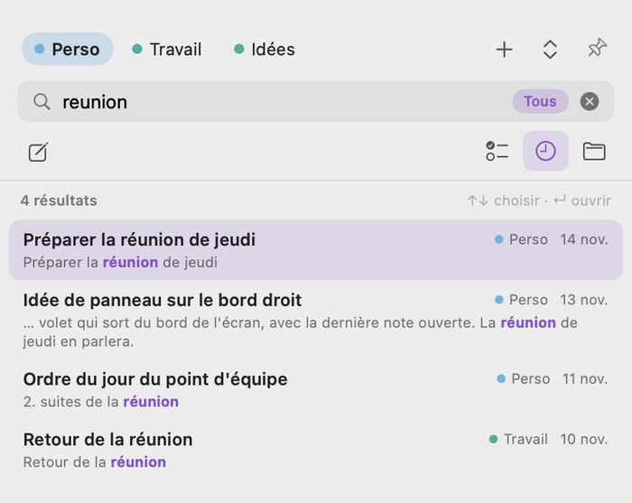
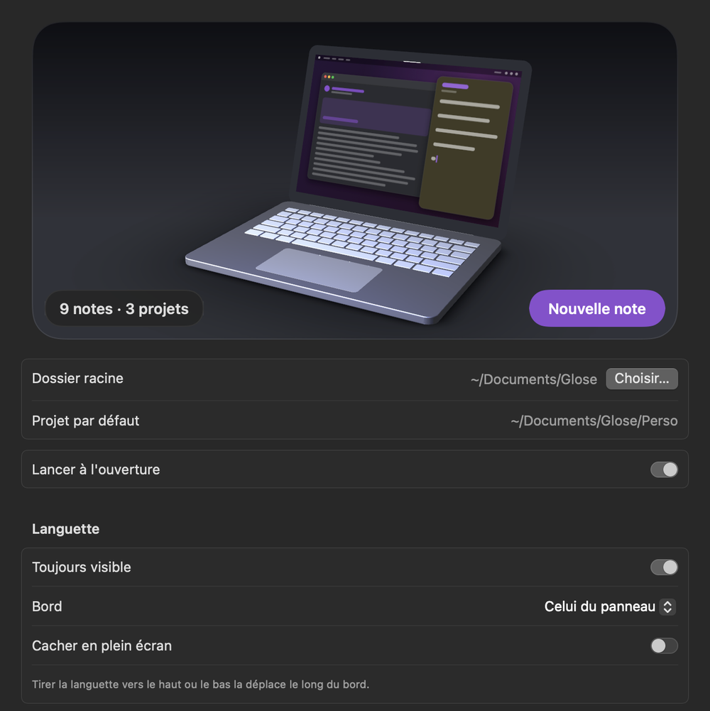
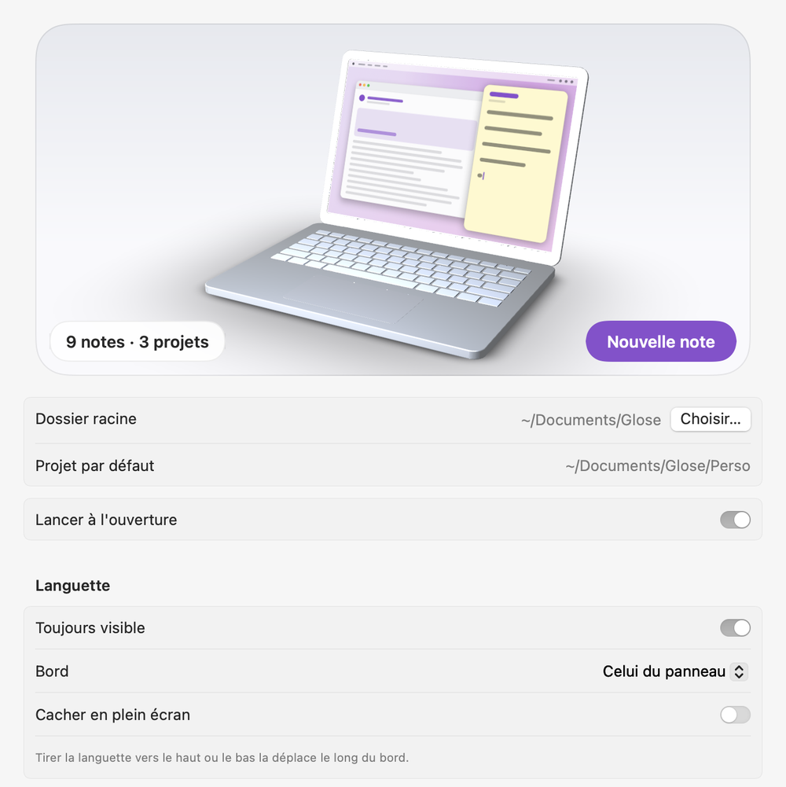

Un panneau de notes Markdown pour Mac, pour celles et ceux qui écrivent vite et veulent garder leurs fichiers.


Un panneau glisse depuis le bord de l'écran, à côté de ce que vous faites. Un projet par onglet, le fil du temps en dessous.




La recherche parcourt un projet ou tous, avec le mot surligné. La recherche par le sens retrouve une note qui n'emploie pas vos mots.


Un fichier .md dans le dossier que vous choisissez. L'app ne les enferme pas : un autre éditeur les ouvre sans Glose.
claude déjà installée, avec votre abonnement.
